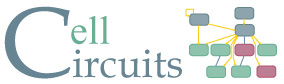

Tutorial (Page 1/3) - Home

|  | |||
SearchValid queries are space-delimited, and include :
Searches using the '*' character may match many different gene names across multiple organisms. Moreover, these searches take longer, so use them wisely (as in the examples above like yap* and gcn*, where families of genes have been grouped by name). To find GO term accessions, term names, or simply to learn more about the GO project, please visit the GO homepage. |
Load an ExampleAt a loss for how to start? Click this button and a valid example query will populate the search box. |
CellCircuits Home | About CellCircuits | Help | Ideker Lab | UCSD
Funding provided by the National Science Foundation (NSF 0425926).